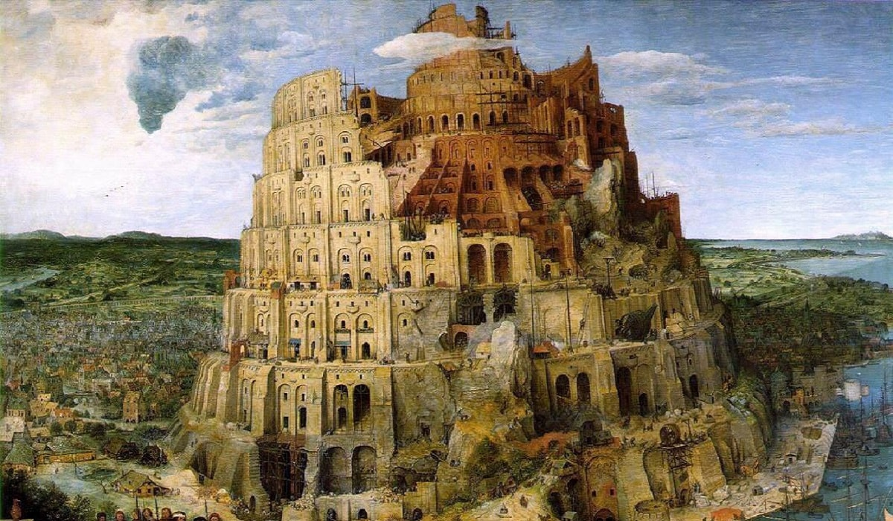

Babil'in Asma Bahçeleri, Dünyanın Yedi Harikası'ndan biridir. Mevkii belli olmasa da geleneksel olarak, bugün Irak'ın Hille şehrinin yakınlarındaki Babil kentinde inşa edildiği söylenmektedir. Babilli rahip Berossus, bahçeleri II. Nebukadnezar'ın inşa ettirdiğini aktarmaktadır, ancak Babil metinlerinde bahçelerden bahseden kesin bir ifade yoktur ve bahçelerin varlığına ilişkin kesin bir arkeolojik delil de bulunmamaktadır.
Bir efsaneye göre, Babil'in Asma Bahçeleri Babil Kralı II. Nebukadnezar tarafından, memleketinin yeşil tepelerini ve vadilerini özleyen eşi Kraliçe Amytis için inşa ettirilmiştir.
